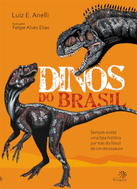
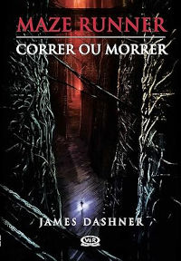
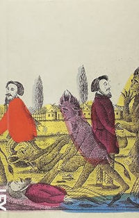
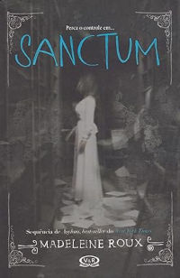

Lista de Livros Lidos por mim durante a vida
Índice
Os Monstros do Cartográfo - Rob Stevens

Como piloto de uma companhia aérea, o primeiro romance de Rob Stevens, Os monstros do cartógrafo, foi
escrito durante as viagens de trem e de taxi pela Europa e em quartos de hotel em Estocolmo, Oslo,
Istambul e Paris. E a estreia não poderia ter sido melhor: tornou-se um bestseller e foi indicado ao
Waterstone's Children's Book Prize.
Em pleno século XV, quando um importante capitão dos mares
decide zarpar em busca de uma nova terra, Walter Bailey e seu sobrinho de doze anos Hugo são empregados
como os cartógrafos do navio. São os dois, inclusive, que analisam cada ilha misteriosa que a frota
encontra pelo caminho.
Ao chegar a uma praia de areia roxa, a dupla de cartógrafos acredita ter
encontrado o paraíso. Mas essa ideia inicial acaba no momento em que Walter é capturado por um
gigantesco rato voador. Com a ajuda de criaturas estranhas e maravilhosas Hugo terá apenas uma chance
para salvar seu tio e colocar à prova seu treinamento em cartografia. Para dificultar, ele terá que
enfrentar seres nunca antes vistos, como porcos voadores, ratos falantes e os temidos bufalogros.
Apesar de ser uma história de aventura e fantasia que se passa em pleno século XV, Os monstros
do cartógrafo é também uma história emocionante de superação e de demonstração do amadurecimento de um
menino que agradará leitores de todas as idades. Foi o que aconteceu na Inglaterra, quando logo após o
lançamento, tornou-se leitura obrigatória entre alunos de colégios e de universidades.
Fonte: Os Monstros do Cartógrafo: Cuidado Com os Bufalogros!
Dinos do Brasil

Quando pensamos em dinossauros, nossa imaginação voa longe, para um passado remoto, quando gigantes
cheios de dentes com garras perigosas circulavam aos montes pela Terra. Sim, há mais de 200 milhões de
anos eles viviam espalhados por todos os cantos do planeta, mas nem todos eram tão monstruosos quanto
imaginamos.
Assim como os répteis de hoje, eles podiam ser muito diferentes uns dos outros.
Neste livro
você vai saber como os paleontólogos descobriram as formas e os tamanhos dos 23 dinossauros brasileiros
e conhecer as histórias que estão por trás dos seus nomes e fósseis. Agora, o mais intrigante de tudo é
saber que eles ainda andam por aí. Dá pra acreditar?
Dinos do Brasil
Maze Runner: Correr ou morrer - James Dashner

LEMBRE
CORRA
SOBREVIVA
Ao acordar dentro de um escuro elevador em movimento, a única coisa que Thomas consegue se lembrar é de
seu nome. Sua memória está completamente apagada. Mas ele não está sozinho. Quando a caixa metálica
chega a seu destino e as portas se abrem, Thomas se vê rodeado por garotos. "Bem-vindo à Clareira,
fedelho."
A Clareira. Um espaço aberto cercado por muros gigantescos. Assim como Thomas, nenhum deles sabe como
foi parar ali. Nem por quê. Sabem apenas que todas as manhãs as portas de pedra do Labirinto que os
cerca se abrem, e, à noite, se fecham. E que a cada trinta dias um novo garoto é entregue pelo elevador.
Porém um fato altera de forma radical a rotina do lugar: chega uma garota, a primeira enviada à
Clareira. E mais surpreendente ainda é a mensagem que ela traz consigo. Thomas será mais importante do
que imagina. Mas para isso terá de descobrir os sombrias segredos guardados em sua mente e correr...
correr muito!
Correr ou Morrer é o primeiro volume da saga Maze Runner, uma séria que já
conquistou milhares de fãs em todo mundo. Escrita pelo americano James Dashner, é um thriller
asfixiante, repleto de ação e suspense psicológico. Aclamado pela crítica como um dos melhores livros de
2009, chegou as telas dos cinemas em 2014 em uma adaptação da dos estúdios Fox.
Fonte: Maze Runner: Correr ou morrer
Anthon Tchekov:O Assasinato e outras historias

Traduzido e organizado pelo romancista Rubens Figueiredo, este livro traz seis contos longos escritos
por
Anton Tchekhov (1860-1904) na última fase de sua obra.
Neles, o tema é o cotidiano da
amesquinhada vida
russa no final do século XIX. Tchekhov revela-se um profundo conhecedor da vida rural e urbana, dos
costumes de mujiques, de comerciantes, de proprietários de terra e de jovens intelectuais.
Suas
narrativas captam um universo amplo, contraditório, tenso, em que o leitor não pode nunca permanecer
impassível. A edição traz algumas cartas de Tchekhov, escritas durante os anos mais produtivos de sua
vida.
Fonte: Anthon
Tchekov:O Assasinato e outras historias
Eu sou Malala: A história da garota que defendeu o direito à educação e foi baleada pelo
Talibã -
Malala Yousafzai

Quando o Talibã tomou controle do vale do Swat, uma menina levantou a voz. Malala Yousafzai recusou-se a
permanecer em silêncio e lutou pelo seu direito à educação.
Mas em 9 de outubro de 2012, uma
terça-feira, ela quase pagou o preço com a vida. Malala foi atingida na cabeça por um tiro à
queima-roupa dentro do ônibus no qual voltava da escola. Poucos acreditaram que ela sobreviveria.
Mas a recuperação milagrosa de Malala a levou em uma viagem extraordinária de um vale remoto no
norte do Paquistão para as salas das Nações Unidas em Nova York. Aos dezesseis anos, ela se tornou um
símbolo global de protesto pacífico e a candidata mais jovem da história a receber o Prêmio Nobel da
Paz.
Eu sou Malala é a história de uma família exilada pelo terrorismo global, da luta pelo
direito à educação feminina e dos obstáculos à valorização da mulher em uma sociedade que valoriza
filhos homens.
O livro acompanha a infância da garota no Paquistão, os primeiros anos de vida
escolar, as asperezas da vida numa região marcada pela desigualdade social, as belezas do deserto e as
trevas da vida sob o Talibã.
Escrito em parceria com a jornalista britânica Christina Lamb,
este livro é uma janela para a singularidade poderosa de uma menina cheia de brio e talento, mas também
para um universo religioso e cultural cheio de interdições e particularidades, muitas vezes
incompreendido pelo Ocidente.
“Sentar numa cadeira, ler meus livros rodeada pelos meus amigos é
um direito meu”, ela diz numa das últimas passagens do livro. A história de Malala renova a crença na
capacidade de uma pessoa de inspirar e modificar o mundo.
Fonte: Eu sou
Malala: A história da garota que defendeu o direito à educação e foi baleada pelo Talibã
Realidade de Madhu - Melissa Tobias

Neste surpreendente romance de ficção científica, Madhu é abduzida por uma nave intergaláctica. A bordo
da colossal nave alienígena, fará amizade com uma bizarra híbrida, conhecerá um androide que vai abalar
seu coração e aprenderá lições que mudarão sua vida para sempre.
Madhu é uma Semente Estelar e
terá que semear a Terra para gerar uma Nova Realidade que substituirá a ilusória realidade criada por
Lúcifer.
Porém, a missão não será fácil, já que Marduk, personificação de Lúcifer na Via
Láctea, com a ajuda de seus fiéis sentinelas reptilianos, fará de tudo para não deixar a Nova Realidade
florescer.
Madhu terá que tomar uma difícil decisão. E aprenderá a usar seu poder sombrio em
benefício da Luz.
Fonte: Realidade de
Madhu
Garota Imperfeita - Simmone Howell

Skylark não é mais uma menina, mas os outros personagens dessa história não estão prestando atenção
nesse fato.
Gully, o irmão mais novo de Sky, tem dez anos e está obcecado por investigar uma
tentativa de assalto; sua mãe foi embora para o Japão numa busca insana pela vida artística; seu pai,
Bill, parece satisfeito em beber enquanto permanece imerso na loja de vinis e no passado; do alto do
terraço, Nancy, a amiga mais velha e experiente, fuma um cigarro e diz que Sky deve se divertir mais;
uma garota é encontrada morta e há cartazes com seu rosto estampado por todo o bairro; há uma
estranha ligação entre a garota dos cartazes e Luke, o novo funcionário de seu pai. Nessa história, cada
acontecimento tem sua própria melodia.
E essa é a história de como Sky encontra seu lugar no
mundo. Um lugar em que não existem garotas perfeitas. É também a história de uma garota louca e de uma
garota fantasma; de um garoto que não sabia de nada e de um garoto que achava que sabia de tudo. E é
sobre vida, morte, luto e romance. Só coisa boa.
Fonte: Garota
Imperfeita
Bunker:Diário da Agonia
'Seis pessoas capturadas e trancafiadas em um bunker, sem contato algum com o exterior. Seis vidas, seis
personalidades que poderiam jamais se cruzar, passam a coabitar o mesmo espaço. Linus, um adolescente de
16 anos
Fonte: Bunker:Diário
da Agonia
Projeto 66

A obra conta, pela ótica de um projeto (em linguagem corporativa), uma viagem de moto realizada na
histórica Route 66 (Rota 66), de Chicago a Los Angeles, nos Estados Unidos.
Sendo um
empreendimento temporário, uma viagem encaixa-se perfeitamente nas características de um projeto, e como
tal, tem sua fase de iniciação, planejamento, execução, monitoração e controle e encerramento, além de
seus conceitos de gestão nas áreas de conhecimento pelas quais todo projeto se baseia.
Fonte: Projeto
66
Asylum
“A loucura é algo relativo. Depende muito do lado da grade em que a pessoa está.” Ao entrar pela
primeira vez na New Hampshire College, Dan Crawford não tem ideia de que viverá neste lugar as cinco
semanas mais intensas de sua vida.
Como os alojamentos estavam em reforma, os alunos estão
instalados na ala desativada de um sanatório. Quando Dan e seus amigos, Abby e Jordan, começam a
explorar os corredores e o sótão, descobrem que aquele edifício não era um instituto para doentes
mentais comuns, pois por ali passaram psicopatas, homicidas; gente extremamente perigosa.
No
entanto, a presença dos três ali não é obra de um mero acaso, pois o asilo é a chave para um passado
terrível e segredos que se recusam a ficar enterrados. Com fotos e cartas ilustrativas, Asylum é um
suspense arrepiante e diferente de tudo o que você já leu. Uma história de terror na fronteira entre a
genialidade e a loucura.
Fonte: Asylum
Sanctum

Visões. Vozes. As lembranças do verão passado, vividas no alojamento Brookline do New Hampshire College,
são as mais aterrorizantes da vida de Dan, Abby e Jordan. Uma experiência traumática que eles querem
esquecer.
Porém, seguir em frente não será uma opção. Alguém quer manter vivo aquele terror. Os
três jovens estão recebendo cartas anônimas com palavras enigmáticas e fotos de um antigo parque de
diversões.
Para dar fim nesse pesadelo, eles irão se disfarçar de candidatos e voltar por um
fim de semana ao campus do NHC.
E, ao chegar lá, eles vão descobrir que aquele parque das fotos
não só é real como também voltou a funcionar. Agora, a capa pista que tentam desvendar, Dan e seus
amigos descobrirão segredos ainda mais sombrios do que haviam imaginado. Além de correrem muito mais
perigo. Para se salvar, eles não poderão perder o controle.
Fonte: Sanctum
É assim que acaba
Em É assim que acaba, Colleen Hoover nos apresenta Lily, uma jovem que se mudou de uma cidadezinha do
Maine para Boston, se formou em marketing e abriu a própria floricultura. E é em um dos terraços de
Boston que ela conhece Ryle, um neurocirurgião confiante, teimoso e talvez até um pouco arrogante, com
uma grande aversão a relacionamentos, mas que se sente muito atraído por ela.
Quando os dois
se apaixonam, Lily se vê no meio de um relacionamento turbulento que não é o que ela esperava. Mas será
que ela conseguirá enxergar isso, por mais doloroso que seja?
É assim que acaba é uma narrativa
poderosa sobre a força necessária para fazer as escolhas certas nas situações mais difíceis. Considerada
a obra mais pessoal de Hoover, o livro aborda sem medo alguns tabus da sociedade para explorar a
complexidade das relações tóxicas, e como o amor e o abuso muitas vezes coexistem em uma confusão de
sentimentos.
Fonte: É assim que
acaba
É assim que começa
Lily Bloom continua administrando uma floricultura. Seu ex-marido abusivo, Ryle Kincaid, ainda é um
cirurgião. Mas agora os dois estão oficialmente divorciados e dividem a guarda da filha, Emerson.
Quando Lily esbarra em Atlas ― com quem não fala há quase dois anos ―, parece que finalmente
chegou o momento de retomar o relacionamento da adolescência, já que ele também está solteiro e parece
retribuir os sentimentos de Lily. Mas apesar de divorciada, Lily não está exatamente livre de Ryle.
Culpando Atlas pelo fim de seu casamento, Ryle não está nada disposto a aceitar o novo relacionamento de
Lily, ainda mais com Atlas, o último homem que aceitaria ver perto de sua filha e da ex-esposa.
Alternando entre os pontos de vista de Atlas e Lily, É assim que começa retoma logo após o epílogo de É
assim que acaba. Revelando mais sobre o passado de Atlas e acompanhando a jornada de Lily para abraçar a
sua segunda chance, no amor enquanto lida com um ex-marido ciumento, É assim que começa prova que
ninguém entrega uma leitura mais emocionante do que Colleen Hoover.
Fonte: É
Assim que Começa
Catacomb
O último ano de colégio enfim chegou. Depois de tanto tempo juntos, Dan, Abby e Jordan resolvem
fazer uma viagem e o destino escolhido é a casa do tio de Jordan em New Orleans. Abby está muito
ansioso e entusiasmado para a aventura, pois a viagem irá ajudá-lo no projeto fotográfico de locais
e monumentos históricos.
Mas toda essa euforia diminui quando, no caminho, os três amigos
percebem que estão sendo seguidos. E ainda começam a receber mensagens misteriosas, pelo celular de
Dan, de um amigo que morreu no último Halloween.
Os três amigos vasculham pistas sobre
acontecimentos do passado para obter respostas sobre as tais mensagens, sobre um fotógrafo não
identificado e sobre a história familiar de Dan.Neste incrível episódio da série Asylum, a única
esperança que resta é sair vivo desta viagem.
Fonte: Catacomb
O Poder do Hábito
Durante os últimos dois anos, uma jovem transformou quase todos os aspectos de sua vida. Parou de fumar,
correu uma maratona e foi promovida. Em um laboratório, neurologistas descobriram que os padrões dentro
do cérebro dela mudaram de maneira fundamental.
Publicitários da Procter & Gamble observaram
vídeos de pessoas fazendo a cama. Tentavam desesperadamente descobrir como vender um novo produto
chamado Febreze, que estava prestes a se tornar um dos maiores fracassos na história da empresa. De
repente, um deles detecta um padrão quase imperceptível - e, com uma sutil mudança na campanha
publicitária, Febreze começa a vender um bilhão de dólares por anos.
Um diretor executivo pouco
conhecido assume uma das maiores empresas norte-americanas. Seu primeiro passo é atacar um único padrão
entre os funcionários - a maneira como lidam com a segurança no ambiente de trabalho -, e logo a empresa
começa a ter o melhor desempenho no índice Dow Jones.
O que todas essas pessoas tem em comum?
Conseguiram ter sucesso focando em padrões que moldam cada aspecto de nossas vidas. Tiveram êxito
transformando hábitos. Com perspicácia e habilidade, Charles Duhigg apresenta um novo entendimento da
natureza humana e seu potencial para a transformação.
Fonte: O Poder do
Hábito
Devastação (Ou a volta à natureza) - Ínicio: 27/12/23 - Término: ??

Eis um um dia onde acontece a pane. A pane estúpida e inacreditável: de repente a eletricidade
desaparece, deixando indefesa e em pânico a humanidade.
Fonte: Devastação
(Ou a volta à natureza)